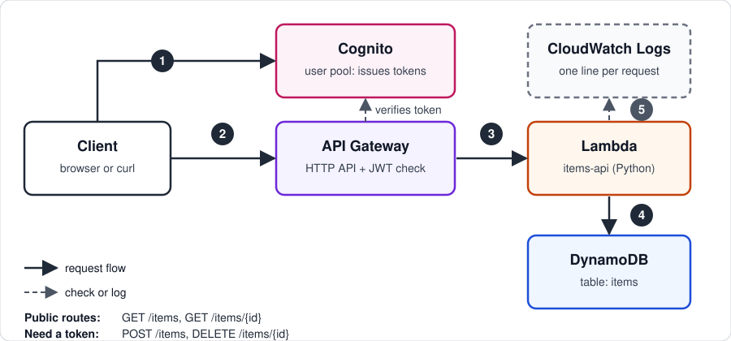

Project documentation
Serverless REST API
A REST API for a simple items list. API Gateway receives requests, a Lambda function runs the logic, and DynamoDB stores the data. Cognito protects the write routes with JWT tokens.
Overview
Reads are public, and writes need a signed-in user:
- Public reads. Anyone can list items or get one by ID.
- Protected writes. Creating and deleting items require a Cognito ID token. Without one, the API returns
401. - Least privilege. The Lambda's role can use only the four DynamoDB actions it needs, on the one table.
- Logging. Each request writes a line to CloudWatch Logs.
Architecture
The client signs in with Cognito to get a token. API Gateway checks the token on the write routes, then invokes the Lambda function.

Routes
| Method | Path | Auth | Purpose |
|---|---|---|---|
| GET | /items | Public | List all items |
| GET | /items/{id} | Public | Get one item |
| POST | /items | JWT | Create an item |
| DELETE | /items/{id} | JWT | Delete an item |
Build steps
- DynamoDB: create table
itemswith partition keyid(String), on-demand capacity. - Cognito: create a user pool with email sign-in and a single-page app client with no secret. Enable the username-and-password flow.
- Lambda: create
items-apion Python 3.12. Set the handler tolambda_function.handlerand add the environment variableTABLE_NAME=items. - Permissions: add an inline policy that allows
Scan,GetItem,PutItem, andDeleteItemon the table's ARN only. - API Gateway: create an HTTP API, add the four routes, and attach one shared Lambda integration to all of them.
- Authorizer: create a JWT authorizer with the user pool's issuer URL and the app client ID as the audience. Attach it to POST and DELETE only.
- Deploy: create the
$defaultstage with auto-deploy on.
Verification
| Check | Expected | Result |
|---|---|---|
GET /items | 200, [] | Verified |
| POST and DELETE without a token | 401 | Verified |
| POST with a Cognito ID token | 201, item returned | Verified |
| GET after POST | Item appears in the list | Verified |
| DELETE with a token | 204, then GET returns [] | Verified |
Browsers can't send a POST or DELETE directly, so the authenticated checks ran from the command line with curl. The token came from Cognito's sign-in call.
Issues I hit
| Symptom | Cause | Fix |
|---|---|---|
Runtime.HandlerNotFound on every request | The console's default handler name didn't match the code | Set the handler to lambda_function.handler. |
GET /items returned 404 after cleanup | Removing the extra integrations also removed the route's integration | Recreated the route and attached the shared integration. |
| Integration couldn't be deleted | A route still referenced it | Point each route at the shared integration first, then delete the extra ones. |
| Sign-in failed with a temporary password | Console-created users must change their password at first sign-in | Answer the NEW_PASSWORD_REQUIRED challenge with RespondToAuthChallenge. |
What's next
- Add a frontend that signs in with Cognito and calls the API.
- Move the setup into infrastructure as code, so it's repeatable.
- Add a CloudWatch alarm on 5xx errors from the API.
Cleanup
Delete the HTTP API, the Lambda function and its role, the Cognito user pool, the DynamoDB table, and the log group. This project has been torn down.